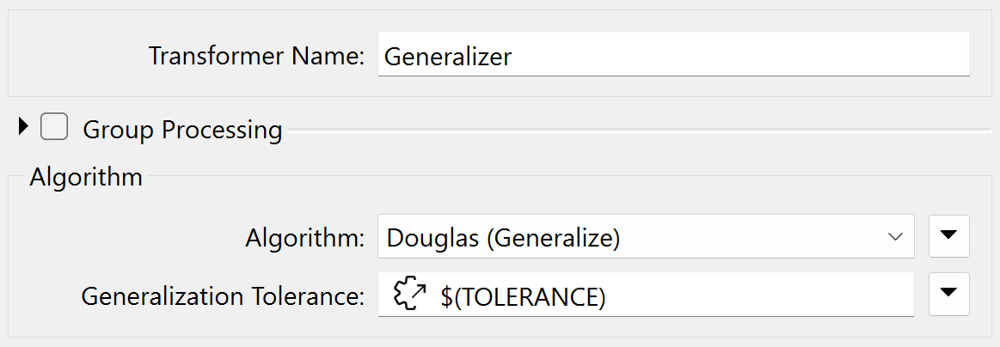
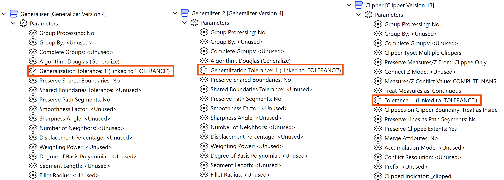
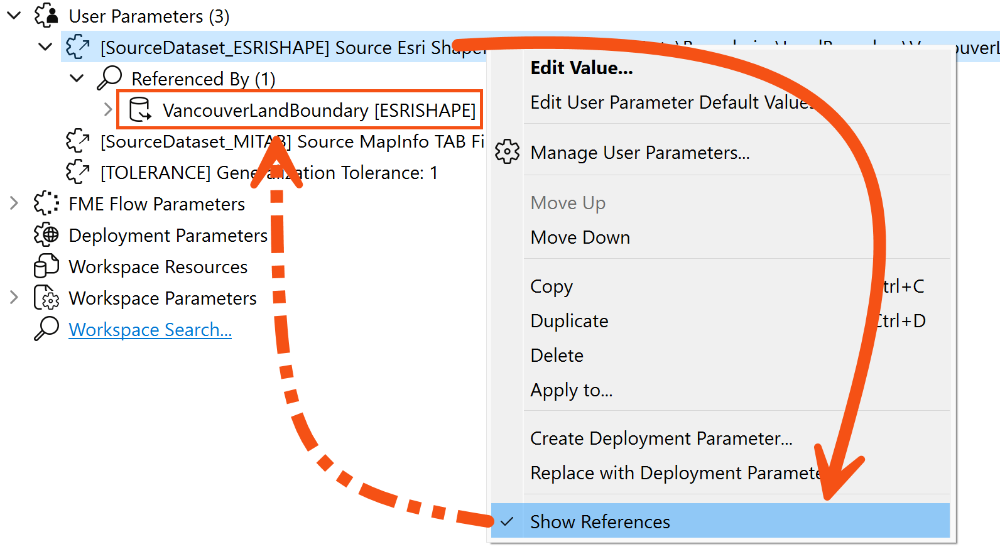
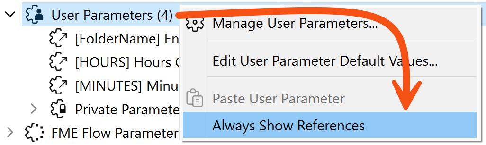
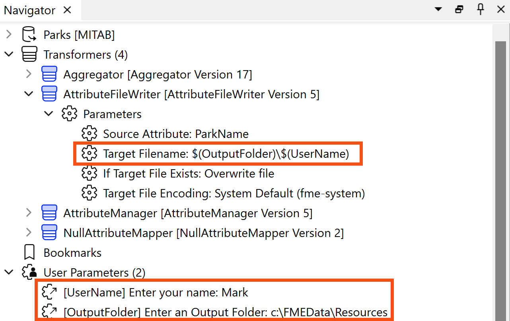
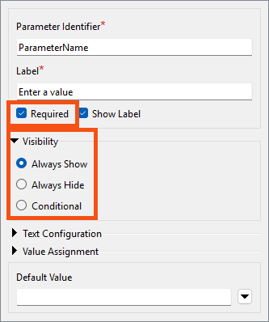
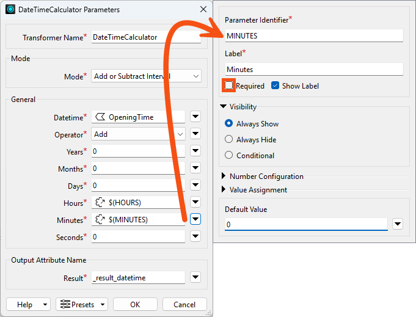
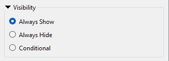
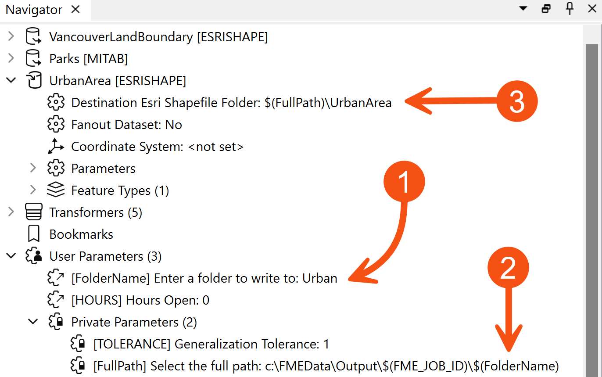
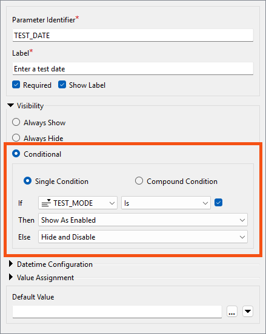

The lesson in the above video has a different name and uses FME 2025.1. We'll be updating it with a new video in the summer of 2026.
After completing this lesson, you’ll be able to:
In this lesson, you will:
The lesson in the above video has a different name and uses FME 2025.1. We'll be updating it with a new video in the summer of 2026.
Shared and embedded parameters are not specific types of parameters; instead, they refer to two different ways parameters might be used.
The Scripted Value parameter lets you define a parameter's value in the workspace at runtime using Python.
There is no limit on how many times a user parameter can be used or linked to an FME parameter. The value obtained from a user parameter can be used as often as required.
A parameter used in two or more places is called a shared parameter.
For example, a workspace has a user parameter called TOLERANCE (here being used inside a Generalizer):

However, the workspace author has decided to apply the same parameter in three places in total: two Generalizers and a Clipper:

The advantage is that the same value can be used without the user having to enter it multiple times.
You might wonder how to tell where FME uses the user parameters you create. What FME parameters is it linked to?
To find out, right-click the parameter and choose the option to Show References:

This applies whether the user parameter is referenced by one FME parameter or many. If you wish to always show these references without having to use "Show References," right-click User Parameters and choose Always Show References:

Sometimes, in FME, parameter values need to be constructed from multiple components. When one parameter is constructed to include the value of another parameter inside it, this is called embedding parameters.
For example, here, the name of a file is constructed from two user parameters: one is a fixed output path, and the other is the user's name:

The technique is called embedding because the user parameters - UserName and OutputFolder - are embedded inside the FME parameter (Target Filename).
Scripted Value parameters go one step further than embedded parameters. Instead of simple concatenation, a Scripted Value parameter allows a Python script to construct a value.
For example, this Python script controls which feature types FME reads based on the value of another user parameter:
import fme
featureTypes = ''
if fme.macroValues['layers'].find('Walking and Biking') != -1:
featureTypes += 'PublicStreets Bikeways '
if fme.macroValues['layers'].find('Rapid Transit') != -1:
featureTypes += 'RapidTransitLine RapidTransitStations '
if fme.macroValues['layers'].find('All Methods') != -1:
featureTypes += 'PublicStreets Bikeways RapidTransitLine RapidTransitStations '
#Debug
#print(featureTypes)
return featureTypes
Note that the script must include a return statement to return a value to the parameter. A scripted parameter is purely for an author's use. The user is not prompted for a value, as it would be absurd to expect them to enter Python code when a workspace runs!
Use the ‘print’ command (in Python) to write from the script to the FME log file.
There are two key parts of the user parameter creation dialog that you should know about: the Required checkbox and the Visibility group.

The Required checkbox tells FME whether the user parameter must be filled out before the workspace runs.
Here, for example, the DateTimeCalculator is being used to calculate the time a park closes, given its opening time and user input on how many hours and minutes it is open:

The MINUTES user parameter does not have Required checked, meaning it is optional. For example, the user can enter that the park is open for eight (8) hours and ignore the MINUTES parameter. The HOURS parameter would be required.
Alternatively, a user parameter might provide a tolerance value to a Generalizer transformer. In this case, the author will want to turn off this checkbox and make the parameter compulsory. A Generalizer that is not given a tolerance value will usually fail, and making tolerance compulsory is one way to prevent that.
This option aims to expose or hide the parameter from the end user.

There are up to three options available:
If you select Always Show, the end user can enter a value for this parameter when the workspace runs. We can call these visible parameters.
If you select Always Hide, the end user will not be prompted to enter a value. We can call these hidden parameters.
You might choose Always Hide for two reasons.
Firstly, it allows a workspace author to create a shared parameter without exposing it to the user.
For example, if you want to supply the same tolerance value to several Snapper transformers – but the author, not the user, sets that value.
The second use of Always Hide is to embed a user's partial input into a larger parameter.
For example, the workspace author prompts the user to enter a folder in which a file is to be written (1). The author then defines the full folder path as a hidden parameter (2) as a mix of a fixed path and a job ID:

Finally, (3) the hidden parameter is embedded inside the FME parameter for the destination Shapefile dataset.
You might have noticed that many FME Flow Parameters are available to workspace authors who intend to deploy their creation on an enterprise scale.
If you look at the above screenshot, a Flow parameter (FME_JOB_ID) has been embedded into the FullPath private parameter.
You can control if user parameters appear to the end-user by setting Visibility to Conditional. With this enabled, you can control which parameters are visible based on user input. The end result can be closer to a native FME transformer.
For example, you can include a checkbox that, when checked, reveals additional parameters. Here is a parameter, TEST_DATE, that lets the user provide a date to use when testing the workspace:

This parameter will only be shown in the prompt if the user has enabled the TEST_MODE parameter. You could use this for a workspace that runs daily to test it on dates in the past to make sure it can handle a variety of data.